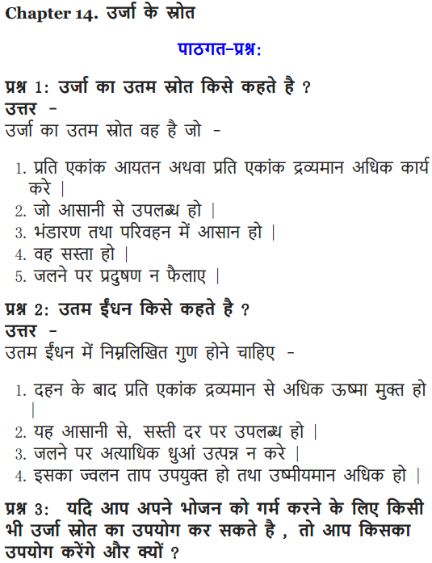
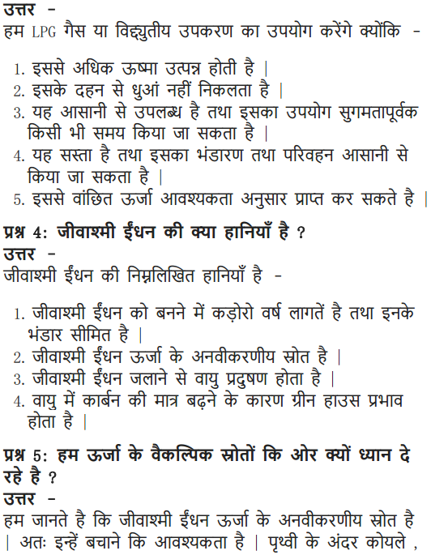
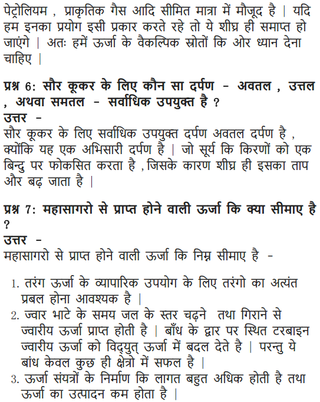
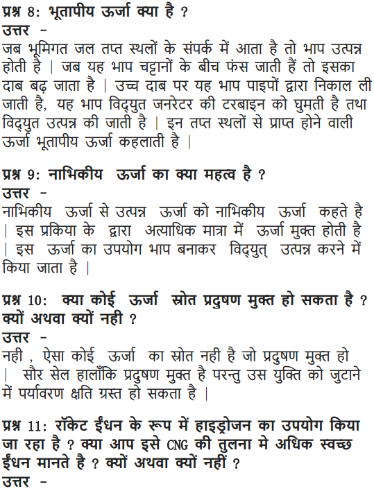
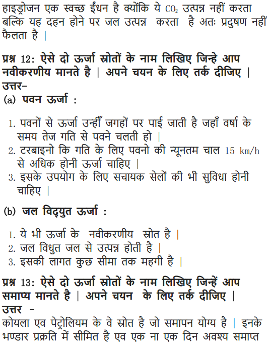
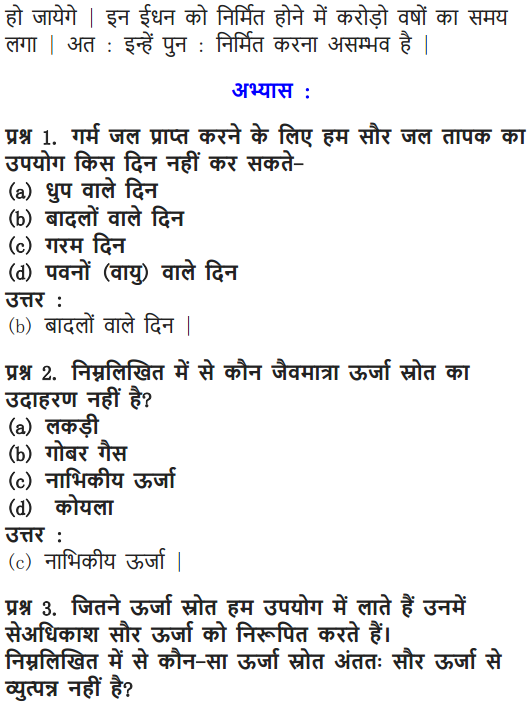
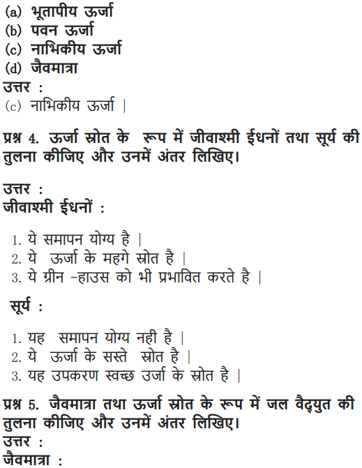
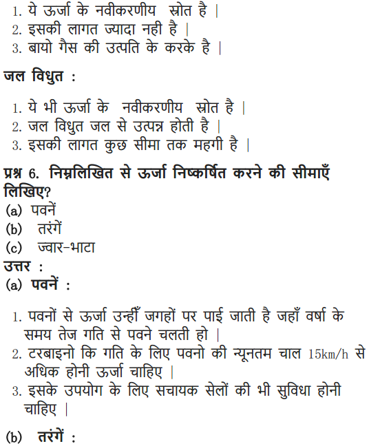
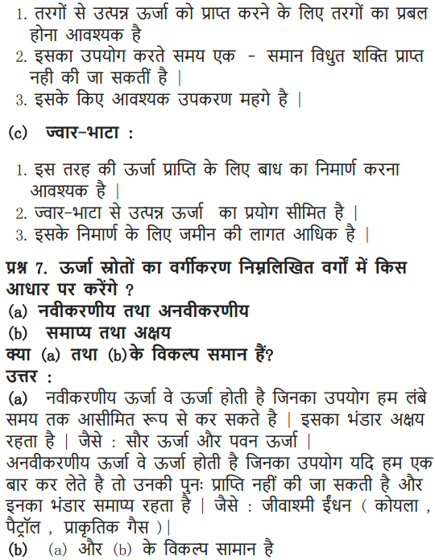
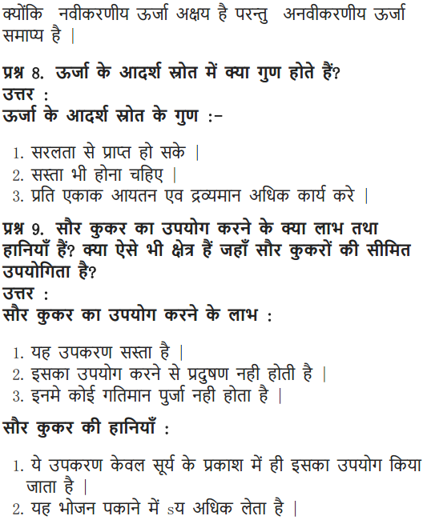

NCERT Solutions For Class 10 Science Chapter 14 Sources Of Energy: Candidates who are searching for NCERT Solutions For Class 10 Science Chapter 14 Sources Of Energy can refer to this article. Sources of energy class 10 NCERT solutions pdf were solved by best physics faculty in India to provide strong command over the Physics subject.
Solving cbse class 10 physics sources of energy questions and answers will not only help candidates in making a good grade in board exams but also helps in cracking the competitive exam such as JEE, JEE Advanced, NEET, JIPMER etc., NCERT Solutions for sources of energy class 10 questions and answers were solved keeping various parameters in mind such as marking scheme, step marks, etc.,
So the candidates who wish to bag a decent score in the unit of sources of energy class 10 Science can scroll down to find out the NCERT Solutions For Class 10 Science Chapter 14.
NCERT Solutions for Class 10 Science Chapter 14 Sources of Energy
Before getting into the details of Sources Of Energy Class 10 NCERT Solutions, let us look at the topics and subtopics under class 10 science chapter 14 notes:
- Sources Of Energy
- What Is A Good Source Of Energy?
- Conventional Sources Of Energy
- Alternative Or Non-Conventional Sources Of Energy
- Environmental Consequences
- How Long Will An Energy Source Last Us?
Free download NCERT Solutions for Class 10 Science Chapter 14 Sources Of Energy PDF in Hindi Medium as well as in English Medium for CBSE, Uttarakhand, Bihar, MP Board, Gujarat Board, and UP Board students, who are using NCERT Books based on updated CBSE Syllabus for the session 2019-20.
- उर्जा के स्रोत कक्षा 10 विज्ञान हिंदी में
- Class 10 Sources of Energy Important Questions
- Sources of Energy Class 10 Notes
- Sources of Energy NCERT Exemplar Solutions
- Sources of Energy Class 10 Extra Questions
- Class 10 Science Sources of Energy Mind Map
NCERT Solutions for Class 10 Science Chapter 14 Intext Questions
Page Number: 243
Question 1
What is a good source of energy?
Answer:
A good source of energy is one that
- does a large amount of work per unit volume or mass
- can be easily accessible
- is easy to store and transport, and
- is economical.
Question 2
What is a good fuel ?
OR
Write any three characteristics of a good fuel. [AICBSE 2015]
Answer:
A good fuel is one which has the following properties :
- It should be fairly cheap.
- It should be easily available.
- Its ignition temperature should be well above normal temperature.
- It should be conveniently handled and transported.
- It should not produce any poisonous material during burning.
- Its combustion rate should be steady and controllable.
- It should not leave any residue or ash after burning.
- A good fuel should have high calorific value so that higher amount of heat may be obtained by burning a little fuel.
Question 3
If you could use any source of energy for heating your food, which one should you use and why ?
Answer:
I would prefer to use cooking gas like LPG. It fulfils many of the criteria of a good fuel like its ignition temperature, good calorific value and non-polluting characteristics.
Page Number: 248
Question 1
What are the disadvantages of fossil fuels ?
Answer:
(i) The burning of fossil fuels produces large amount of carbon dioxide that causes increased greenhouse effect.
(ii) The burning of fossil fuels (such as coal) produces smoke which pollutes the air.
(iii) The burning of fossil fuels produces acidic gases such as sulphur dioxide and nitrogen oxide. These acidic gases cause acid rain that affects our water and soil resources.
(iv) Fossil fuels cannot be replenished in short time because it takes millions of years to form them.
Question 2
Why are we looking at alternate sources of energy ?
Answer:
We are looking at alternate sources of energy because of the following reasons.
- The fossil fuels and nuclear fuels on the earth are limited which may not last for long.
- The undesirable effects of pollution, both from the burning of fossil fuels and from the radioactive nuclear wastes of nuclear power plants are creating threat to our environment.
Question 3
How has the traditional use of wind and water energy been modified for convenience ?
Answer:
(i) Wind mill farms are constructed to produce electricity.
(ii) The traditional use of energy of flowing water has been modified by establishing hydro-power plants. At hydro-power plants, the energy of falling water or flowing water is tapped by using a water turbine and then made to drive generators.
Page Number: 253
Question 1
What kind of mirror-concave, convex or plane – would be the best suited for use in a solar cooker ? Why ?
Answer:
A concave mirror would be best suited in a solar cooker because it focuses the sunlight in a very small area of the solar cooker and a high temperature is produced in it which is sufficient to cook the food.
Question 2
What are the limitations of the energy that can be obtained from the oceans?
Answer:
The energy from the oceans can be obtained mainly in three forms. These are
(i) tidal energy
(ii) wave energy and
(iii) ocean thermal energy
- Limitations of Tidal Energy :
(i) There are very few sites around the world which are suitable for building tidal dams.
(ii) The rise and fall of sea-water during high and low tides is not enough to generate electricity on a large scale.
- Limitations of wave energy : The movement of ocean waves is associated with kinetic energy. Such sites in the world are limited where the waves strike the shore lines with sufficient power.
- Limitations of ocean thermal energy : NCERT Solutions for Class 10 Science Chapter 14 Sources of EnergyTo convert ocean thermal energy into electricity, a temperature difference of 20°C (or more) between the surface water of ocean and deeper water is needed for operating OTEC power plants. This involves high cost.
Question 3
What is geothermal energy ?
Answer:
Energy stored as heat in certain regions of the earth (called hot spots) is called geothermal energy. Hot spots are the locations below earth’s crust where upward moving magma gets collected due to geological changes. When underground water comes in contact with the hot spots, steam is generated. This steam is utilised to generate electricity using pipes and turbines. Sometimes hot water from the hot spot finds outlet at the surface. Such outlets are called hot springs.
Question 4
What are the advantages of nuclear energy ?
Answer:
The advantages of nuclear energy are that :
- It produces a large amount of useful energy from a very small amount of a nuclear fuel (like uranium-235).
- Once the nuclear fuel (like uranium-235) is loaded into the reactor, the nuclear power plant can go on producing electricity for two to three years at a stretch. There is no need for putting in nuclear fuel again and again.
- It does not produce gases like carbon dioxide which contributes to greenhouse effect or sulphur dioxide which causes acid rain.
Page Number: 253
Question 1
Can any source of energy be pollution free ? Why or why not ?
Answer:
No source of energy can be pollution free because even if it is clean, its assembly could have caused some environmental damage.
Question 2
Hydrogen has been used as rocket fuel. Would you consider it a cleaner fuel than CNG ? Why or why not ?
Answer:
Hydrogen is cleaner fuel than CNG. This is because the burning of hydrogen produces only water, which is totally harmless. On the other hand, burning of CNG produces carbon dioxide gas and water. The carbon dioxide can produce greenhouse effect in the atmosphere and lead to the excessive heating of the environment in long run.
Page Number: 243
Question 1
Name two energy sources that you would consider to be renewable. Give reasons for your choices.
Answer:
(i) Energy derived from biomass is a renewable source of energy because waste products are continuously produced. Plants and trees are also grown at reasonable intervals.
(ii) The energy derived from flowing water, wind, sun and ocean are renewable sources because these sources can be harnessed into energy so long as the present solar system exists.
Question 2
Give the names of two energy sources that you would consider to be exhaustible. Give reasons for your choices.
Answer:
Fossil fuels like coal and petroleum are exhaustible sources of energy. The estimated reserves of these fuels are said to last us for about another 200 years, while it takes millions of years for these to be formed.
NCERT Solutions for Class 10 Science Chapter 14 Textbook Chapter End Questions
Question 1
A solar water heater cannot be used to get hot water on
(a) a sunny day
(b) a cloudy day
(c) a hot day
(d) a windy day
Answer:
(b) A cloudy day.
Question 2
Which of the following is not an example of a biomass energy source ?
(a) Wood
(b) Gobar gas
(c) Nuclear energy
(d) Coal
Answer:
(c) Nuclear energy.
Question 3
Most of the sources of energy we use represent stored solar energy. Which of the following is not ultimately derived from the sun’s energy ?
(a) Geothermal energy
(b) Wind energy
(c) Nuclear energy
(d) Biomass
Answer:
(a) Geothermal energy.
Question 4
Compare and contrast fossil fuels and the sun as direct sources of energy Ans
Answer:
| Fossil fuels | Sun |
| (i) Non-renewable source of energy. | (i) Renewable source of energy. |
| (ii) Cause a lot of air pollution. | (ii) Pollution-free, doesn’t cause any pollution. |
| (iii) They will exhaust in future. | (iii) It is a non-exhaustible source. |
| (iv) Energy can be tapped throughout the year. | (iv) Energy cannot be tapped during night and cloudy and rainy days. |
Question 5
Compare and contrast biomass and hydro-electricity as sources of energy. Ans.
Answer:
| Biomass | Hydroelectricity |
| (i) Renewable source of energy. | (i) Renewable source of energy. |
| (ii) Biomass plants can be installed at any place to produce biomass as energy source. | (ii) Plants can be installed only at the places where dams can be constructed. |
| (iii) To collect waste materials is a tough and costly process. | (iii) Once the plants start to work, it is not difficult to collect water. |
Question 6
What are the limitations of extracting energy from
(a) the wind ?
(b) waves ?
(c) tides ?
Answer:
(a) Limitations of wind energy
(i) Wind energy farms cannot be established everywhere. The wind energy farms can be established only at those places, where wind blows for most part of the year.
(ii) The wind required for generating electricity should be strong and steady to maintain the desired level of generation. The minimum wind speed necessary for satisfactory working of the wind generator is about 15 km/h. This is not always so.
(iii) The wind energy farms require a large area of land.
(iv) The setting up of wind energy farms is very expensive.
(b) Limitations of wave energy : The harnessing of sea-waves energy would be a viable proposition only at those places where sea-waves are very strong. This has constraints of time and location.
(c) Limitations of tidal energy :
(i) There are very few sites around the world which are suitable for building tidal dams.
(ii) The rise and fall of sea-water during high and low tides is not enough to generate electricity on a large scale.
Question 7
On what basis would you classify energy sources as
(a) renewable and non-renewable ?
(b) exhaustible and inexhaustible ?
Are the options given in (a) and (b) the same ?
Answer:
(a) Renewable sources : The sources of energy which are being produced continuously in nature and are inexhaustible, are called renewable sources of energy. The energy derived from flowing water, wind, tides, ocean waves, or wood are examples of energy from such sources.
Non-renewable sources : These sources are produced over million of years under special conditions. Once consumed, these are not replaceable for a very long time. Fossil fuels like coal, petroleum and natural gas are non-renewable sources.
(b) Exhaustible sources are non-renewable sources, while inexhaustible sources are renewable sources.
Yes, the options given in (a) and (b) are the same.
Question 8
What are qualities of an ideal source of energy ?
Answer:
An ideal source of energy
- Must give an adequate amount of net energy.
- Must be convenient to use so as to give energy at a steady rate.
- Must be easy to store and transport.
Question 9
What are the advantages and disadvantages of using a solar cooker ? Are there places where solar cookers would have limited utility ?
Answer:
Advantages of using solar cooker :
- The use of solar cooker for cooking food saves precious fuels like coal, kerosene and LPG.
- The use of solar cooker does not produce smoke due to which it does not pollute air.
- When food is cooked in solar cooker, its nutrients do not get destroyed. This is because in a solar cooker, food is cooked at a comparatively lower temperature.
- In a solar cooker, up to four food items can be cooked at the same time.
Disadvantages of using solar cooker :
- The solar cooker cannot be used to cook food during night because sunshine is not available at that time.
- If the day sky is covered with clouds, even then solar cooker cannot be used to cook food.
- The direction of reflector of solar cooker has to be changed from time-to-time to keep it facing the sun.
Sources of Energy - The box-type solar cooker cannot be used for baking (making chappattis, etc.) or for frying.
The places that receive rain most of the year or where the sky remains cloudy, the solar cooker has limited utility.
Question 10
What are the environmental consequences of the increasing demand for energy? What steps would you suggest to reduce energy consumption ?
Answer:
Some of the environmental consequences of the increasing demand for energy are the following :
- The combustion of fossil fuels is producing acid rain and damaging plants (crops), soil and aquatic life.
- The burning of fossil fuels is increasing the amount of greenhouse gas carbon-dioxide in the atmosphere. It has also affected the rainfall.
- The cutting down of trees from the forest for obtaining fire-wood is causing soil erosion and destroying wild life.
- The construction of hydro-power plants is disturbing ecological balance.
- Nuclear power plants are increasing radioactivity in the environment.
The following steps can be taken to reduce energy consumption :
- Switch off lights, fans, TV. and other such electrical appliances when not needed, to save electricity.
- Use energy efficient electrical appliances to save electricity. This can be done by using compact fluorescent lamps (CFL) and tube lights in place of conventional filament- type electric bulbs.
- Good quality stoves should be used to burn fuels like kerosene and LPG so as to obtain maximum heat.
- Pressure cookers should be used for cooking food to save fuel.
- Solar cookers should be used to cook food whenever possible and solar water heaters should be used to get hot water.
- The use of biogas as fuel should be encouraged in rural areas.
- Bicycles should be used for short distances to save fuel like petrol which is used in cars, scooters and motorcycles.
NCERT Solutions for Class 10 Science Chapter 14 Sources of Energy
Sources of energy : Different forms of energy, conventional and non-conventional sources
of energy: Fossil fuels, solar energy; biogas; wind, water and tidal energy; Nuclear energy, Renewable versus non-renewable sources of energy.
| Board | CBSE |
| Textbook | NCERT |
| Class | Class 10 |
| Subject | Science |
| Chapter | Chapter 14 |
| Chapter Name | Sources of Energy |
| Number of Questions Solved | 24 |
| Category | NCERT Solutions |
Formulae Handbook for Class 10 Maths and Science
Question 1
What is a good source of energy?
Solution:
A good source of energy would be one,
i) Which would do a large amount of work per unit volume or mass.
ii) Be easily accessible.
iii) Be easy to store and transport, and
iv) Perhaps most importantly, be economical.
Question 2
What is a good fuel?
Solution:
A good fuel would be one,
i) Which is easily available.
ii) It should not produce too much of smoke.
iii) On burning should release less amount of heat.
More Resources for CBSE Class 10
- NCERT Solutions
- NCERT Solutions for Class 10 Science
- NCERT Solutions for Class 10 Maths
- NCERT Solutions for Class 10 Social
- NCERT Solutions for Class 10 English
- NCERT Solutions for Class 10 Hindi
- NCERT Solutions for Class 10 Sanskrit
- NCERT Solutions for Class 10 Foundation of IT
- RD Sharma Class 10 Solutions
Question 3
If you could use any source of energy for heating your food, which one would you use and why?
Solution:
Solar energy can be used for heating food because it is easily available, it will not produce smoke and it will not release any amount of heat.
Download NCERT Solutions for Class 10 Science Chapter 14 Sources of Energy PDF
Question 4
What are the disadvantages of fossil fuels?
Solution:
Fossil fuels are non-renewable. Burning of coal or petroleum products causes the air pollution. The oxides of carbon, nitrogen and sulphur that are released on burning fossil fuels are acid oxides. These lead to acid rain, which affects water and soil resources.
Question 5
Why are we looking at alternate sources of energy?
Solution:
The fossil fuels are non-renewable sources of energy. So we need to conserve them. If we were to continue consuming these sources at such alarming rates, we would soon run out of energy. In order to avoid this, alternate sources of energy were explored.
Question 6
How has the traditional use of wind and water energy been modified for our convenience?
Solution:
The wind possesses kinetic energy. This energy was harnessed by windmills in the past to do mechanical work. Today, wind energy is also used to generate electricity.
Another traditional source of energy was the kinetic energy of flowing water or the potential energy of water at a height. Hydropower plants convert the potential energy of falling water into electricity.
Question 7
What kind of mirror – concave, convex or plane – would be best suited for use in a solar cooker? Why?
Solution:
Plane mirror would be best suited for use in a solar cooker. A plane mirror is used as a reflector. The reflector is used to increase the area over which the solar energy is collected so that more and more heat rays of the sun may enter the solar cooker.
Question 8
What are the limitations of the energy that can be obtained from the oceans?
Solution:
The energy from the oceans can be obtained mainly in three forms,
a) Tidal energy
b) Ocean waves energy
c) Ocean thermal energy
The energy potential from sea is quite large, but efficient commercial exploitation is difficult.
Question 9
What is geothermal energy?
Solution:
‘Geo’ means ‘earth’ and ‘thermal’ means ‘heat’. Thus the geothermal energy is the heat energy from the hot rock present inside the earth. This heat can be used as a source of energy to produce electricity.
Question 10
What are the advantages of nuclear energy?
Solution:
The advantages of nuclear energy is as follows,
(a) It generates electricity.
(b) Disease like cancer can be treated.
(c) It helps for the improvement in the agriculture and industry.
Question 11
Can any source of energy be pollution-free? Why or why not?
Solution:
Yes, Solar energy does not cause any pollution. Solar cells make use of the ‘everlasting solar energy’ and their use does not produce any environmental pollution.
Question 12
Hydrogen has been used as a rocket fuel. Would you consider it a cleaner fuel than CNG? Why or why not?
Solution:
Yes, hydrogen is a cleaner fuel than CNG because of its very high colorific value, hydrogen is an extremely good fuel.
Question 13
Name two energy sources that you would consider to be renewable. Give reasons for your choices.
Solution:
Hydro Energy and Solar Energy
Hydro energy or water energy is renewable source of electric energy, which will never get exhausted, since water is available in plenty.
Solar energy is also known as light energy, which is obtained from the sun and it will never get exhausted.
Question 14
Give the names of two energy sources that you would consider to be exhaustible. Give reasons for your choices.
Solution:
Coal and petroleum are the two energy sources that are considered to be exhaustible. They are non-renewable sources of energy and are present in a limited amount in the earth. Once exhausted, they will not be available to us again.
Question 15
A solar water heater can be used to get hot water on
(a) a sunny day.
(b) a cloudy day.
(c) a hot day.
(d) a windy day.
Solution:
(a) a sunny day.
Question 16
Which of the following is not an example of a bio-mass energy source?
(a) wood
(b) gobar-gas
(c) nuclear energy
(d) coal.
Solution:
(c) nuclear energy.
Question 17
Most of the sources of energy we use represent stored solar energy.
Which of the following is not ultimately derived from the Sun’s energy?
(a) geothermal energy
(b) wind energy
(c) nuclear energy
(d) bio-mass.
Solution:
(c) nuclear energy.
Question 18
Compare and contrast fossil fuels and the Sun as direct sources of energy.
Solution:
Fossil fuels are non-renewable sources of energy. These non-renewable sources of energy (like coal, petroleum, natural gas) are present in a limited amount in the earth. Once exhausted, they will not be available to us again.
The sun is the source of all energy. The sun is a renewable source of energy, provides us heat and light energy free of cost. The energy obtained from the sun is called solar energy. The energy coming from the sun contains heat rays, visible light, ultra-violet rays and some gamma rays.
Question 19
Compare and contrast bio-mass and hydro electricity as sources of energy.
Solution:
The waste material of living things and the dead parts of living things is called bio-mass. Bio-mass contains carbon compounds and it is the oldest source of heat energy for domestic purposes. The important examples of bio-mass being used as a fuel are wood, cattle dung and agriculture wastes like bagasse.
Hydropower plants convert the potential energy of falling water into electricity. Water energy is a renewable source of electric energy, which will never get exhausted. The construction of dams on rivers helps in controlling floods and in irrigation.
Question 20
What are the limitations of extracting energy from
(a) the wind?
(b) waves?
(c) Tides?
Solution:
a) There are many limitations in harnessing wind energy. Wind energy farms can be established only at those places where wind blows from the greater part of a year. The wind speed should also be higher than 15 Km/h to maintain the required speed of the turbine. There should be some back-up facilities to take care of the energy needs during a period when there is no wind.
b) The waves are generated by strong winds blowing across the sea. Wave energy would be a viable proposition only where waves are very strong.
c) Tidal energy is harnessed by constructing a dam across a narrow opening, the location where such dams can be built are limited.
Question 21
On what basis would you classify energy sources as
(a) renewable and non-renewable?
(b) exhaustible and inexhaustible?
Are the options given in (a) and (b) the same?
Solution:
The options given in (a) and (b) are the same.
Those sources of energy, which are being, produced continuously in nature and are inexhaustible are called renewable sources of energy.
Those sources of energy, which have accumulated in nature over a very, very long time and cannot be quickly replaced when exhausted are called non-renewable sources of energy.
Question 22
What are the qualities of an ideal source of energy?
Solution:
The important qualities of an ideal source of energy is
a) It should be a renewable source of energy.
b) It should be pollution-free.
c) It should be economical.
d) It should be easily accessible.
Question 23
What are the advantages and disadvantages of using a solar cooker? Are there places where solar cookers would have limited utility?
Solution:
The advantages of a solar cooker
i) The use of solar cooker for cooking food saves fuel.
ii) The use of solar cooker does not produce smoke due to which the environment also does not get polluted.
iii) When food is cooked in a solar cooker, its nutrients do not get destroyed. This is because in a solar cooker, food is cooked at comparatively lower temperature.
iv) In a solar cooker, upto four food items can be cooked at the same time.
The disadvantages of a solar cooker
i) The box-type solar cooker cannot be used to make chappaties.
ii) The box-type solar cooker cannot be used for ‘frying’.
The limited utility of a solar cooker is
i)The solar cooker cannot be used to cook the food during nighttime.
ii) If the day-sky is covered with clouds, even then the solar cooker cannot be used to cook the food.
iii) The direction of reflector of solar cooker has to be changed from time to time to keep it facing the sun.
Question 24
What are the environmental consequences of the increasing demand for energy? What steps would you suggest to reduce energy consumption?
Solution:
Exploiting any source of energy disturbs the environment in some way or the other. The source we would choose depends on factors such as the case of extracting energy from that source, the economics of extracting energy from the source, the efficiency of technology available and the environmental damage that will be caused by using that source.
We cannot depend on the fossil fuels for much longer, if we manage bio-mass by replacing the trees we cut down for fire-wood, we can be assured of a constant supply of energy at a particular rate. Renewable energy is available in our natural environment, in the form of some continuing or repetitive current of energy, or is stored in such large under ground reservoirs that the rate of depletion of reservoirs because of extraction of usable energy is practically negligible.
Multiple Choice Questions (MCQs) [1 Mark each]
Question 1.
Which of the following is a non-renewable source of energy? [NCERT Exemplar]
(a) Wood
(b) Sun
(c) Fossil fuel
(d) Wind
Answer:
(c) The fossil fuels are non-renewable sources of energy whereas wood, the Sun and wind are renewable sources of energy. Non-renewable sources of energy are those which are exhaustible and cannot be replaced, once they have been used. They are also known as conventional sources of energy.
Question 2.
Fuel used in thermal power plant is [NCERT Exemplar]
(a) water
(b) uranium
(c) bio-mass
(d) fossil fuels
Answer:
(d) The thermal power plant generates electric power from heat produced by burning fossil fuel, i.e. coal and petroleum. Everyday we burn a large amount of fossil fuels to heat up water to produce steam. The steam so produced runs turbines to generate electricity.
Question 3.
In a hydroelectric power plant more electrical power can be generated, if water falls from a greater height because [NCERT Exemplar]
(a) its temperature increases
(b) a large amount of potential energy is converted into kinetic energy
(c) the electricity content of water increases with height
(d) more water molecules dissociate into ions
Answer:
(b) In a hydroelectric power plant, more electrical power can be generated, if water falls from a greater height, because the rise in water level causes the increase in potential energy of water. Thus, when it flows from higher position more amount of kinetic energy is formed by the conversion of higher potential energy and this kinetic energy in the form of moving water can produce more electrical power.
Question 4.
The power generated in a windmill [NCERT Exemplar]
(a) is more in rainy season, since damp air would mean more air mass hitting blades
(b) depends on the height of the tower
(c) depends on wind velocity
(d) can be increased by planting tall trees close to the tower
Answer:
(c) Wind energy farms can be located only in vast open areas located in favourable wind conditions as the minimum velocity for a windmill to functions is 11-16 km/h and is called as cut in speed. Thus, the power generated in a windmill depends on wind velocity.
Question 5.
Choose the correct statement. [NCERT Exemplar]
(a) Sun can be taken as an inexhaustible source of energy
(b) There is infinite storage of fossil fuel inside the Earth
(c) Hydro and wind energy plants are non-polluting sources of energy
(d) Waste from a nuclear power plant can be easily disposed off
Answer:
(a) The Sun has been radiating an enormous amount of energy at the present rate for nearly 5 billion years and will continue radiating at that rate for about 5 billion years more, so the Sun can be taken as an inexhaustible source of energy.
Question 6.
Which part of the solar cooker is responsible for greenhouse effect? [NCERT Exemplar]
(a) Coating with black colour inside the box
(b) Mirror
(c) Glass sheet
(d) Outer cover of the solar cooker
Answer:
(c) Glass sheet present in the solar cooker easily passes the radiation into the solar cooker and the radiation gets absorbed and that reflected back by the black coating is of longer wavelength and cannot pass back out through the glass. Thus, glass sheet produces greenhouse effect in solar cooker.
Question 7.
Ocean thermal energy is due to [NCERT Exemplar]
(a) energy stored by waves in the ocean
(b) temperature difference at different levels in the ocean
(c) pressure difference at different levels in the ocean
(d) tides arising out in the ocean
Answer:
(b) The water at the surface of the sea or ocean is heated by the Sun, while the water in deeper sections is relatively cold. This difference in temperature between these layers ranges from 10-30 °C and is exploited to obtain energy. Thus, ocean thermal energy is due to temperature difference at different levels in the ocean.
Question 8.
The major problem in harnessing nuclear energy is how to [NCERT Exemplar]
(a) split nuclei
(b) sustain the reaction
(c) dispose off spent fuel safely
(d) convert nuclear energy into electrical energy
Answer:
(c) The major hazard of nuclear power generation is the storage and disposal of spent or used fuels. Improper nuclear waste storage and disposal result in environmental contamination as well as risk of accidental leakage of nuclear radiation. It happened in Chernobyl disaster 1986, Fukushima Nuclear disaster 2011 caused great damage to the living beings and habitats.
NCERT Solutions for Class 10 Science Chapter 14 Sources of Energy (Hindi Medium)











Class 10 Science Sources of Energy Mind Map
SOURCES OF ENERGY
(Plants, winds, water, coal, bio-gas, natural gas etc.)
It should not affect the environment. It should be eco-friendly.
Biogas is a mixture of methane (75%) CO2, hydrogen and traces of hydrogen sulphide. Methane is an extremely good fuel
Environmential Consequences
- Air pollution and acid rain
- Green house effect
- Damage to water bodies and to human life.
Types of Sources of Energy
- Renewable Sources of Energy
- Non- Renewable Sources of Energy
Renewable Sources of Energy
Which can be easily generated and whose supply is unlimited.
Hydro Power Plants
The potential energy of falling water is converted into electricity.
- Limited Dams
- Construction needs a large area
- Eco-systems are destroyed
- High lost of installation
- About 20% of the power generated in India comes from hydro power plants
Wind Energy
When wind blows with a sufficient speed, it gets ability to do some work
It doesn’t pollute the air like power plants that rely on combustion of fossil fuels
Wind mill
It is a device which is used to convert wind energy into electrical energy. More than 25% of the electricity needs are generated through a vast network of wind mills.
Wind farm and power plants
It is basically used to generate electricity on a commercial basis, (large scale)
Wind power plants needs high maintenance and high wind speeds
Wind farms are noisy and may spoil the view for people living near them
Biomass
It means any organic matter from which we get energy on a renewable basis
Solar Energy
The energy coming with the rays of the sun. The ultimate source of energy
Solar Cooker
It is a device that uses solar energy to cook food
Solar Panel
It is a combination of large number of solar cells to draw high voltage for commercial purposes
Solar Cells
It is a device which converts solar energy into electric energy
Solar cells can be used in many small appliances like calculators and spacecrafts
Energy from the Sea
Form of energy obtained from the ocean in the form of tidal waves; wind blowing etc.
Tidal energy
It is a form of energy which is obtained from the ocean in the form of tidal waves
Wave energy
It is a another type of ocean based energy source that uses the power of waves to generate electricity
Ocean thermal energy (OTE)
This energy is obtained from using the temperature difference between deep cold ocean water ane warm surface water
Geothermal energy
It is the energy which is stored in the form of heat inside the earth
Characteristics of good sources of energy
- Easy storing and transportation
- Easy access
- Large amount of work per unit volume or mass
- Economical
Non-Renewable Sources of Energy
Which cannot be generated easily and whose supply is limited
Advantages
- High in energy
- Profitable
- Easy to use
- Cost effective
Disadvantages
- Time consuming to extract
- Dangerous for humans
- Contribution to acid rain
- Not viable for future generations
Fossil Fuels
These are hydrocarbons based natural resources that were formed 300 millions years ago.
Thermal Power Plant
Fuel is burnt to produce heat energy which is converted into electrical energy
Advantages
- Smaller space is required as compared to hydro power plant
- Running costs are less compared to gas plants or diesel
Major Hazards
Causes Air Pollution Green House Effect and Acid Rain
Nuclear Energy
Energy released during nuclear reactions
Types of Nuclear Energy
Nuclear Fission
It is a process in which a heavy nucleus splits up into two lighter nuclei
→ 92U235 + 0n1
56Ba141 + 36Kr92 + 30n1 + energy
This principle is used in atom bomb
Moderator
Slow down fast moving neutrons e.g.: heavy water, graphite
Coolant
Remove heat e.g.: cold water, liquid oxygen
Control rods
Absorb neutrons e.g.: boron, cadmium
Nuclear Fusion
It is a process in which two lighter nuclei combine together to form a heavier nucleus
1H2 + 1H2 + 1H2 → 2He4 + 1H1 + 0n1 + 21.6 Mev
This principle is used in hydrogen bomb
Major Hazards
- Storage of spent fuels.
- Disposal of spent fuels.
- High cost of Installation
- Limited availability of fuel.
Now that you are provided all the necessary information regarding NCERT Solutions For Class 10 Science Chapter 14 Sources Of Energy and we hope this detailed article on sources of energy class 10 questions and answers are helpful. If you have any doubt regarding this article or cbse class 10 physics sources of energy questions and answers, drop your comments below and we will get back to you at the earliest.
NCERT Solutions for Class 10 Science All Chapters
- Chapter 1 Chemical Reactions and Equations
- Chapter 2 Acids, Bases and Salts
- Chapter 3 Metals and Non-metals
- Chapter 4 Carbon and Its Compounds
- Chapter 5 Periodic Classification of Elements
- Chapter 6 Life Processes
- Chapter 7 Control and Coordination
- Chapter 8 How do Organisms Reproduce?
- Chapter 9 Heredity and Evolution
- Chapter 10 Light Reflection and Refraction
- Chapter 11 Human Eye and Colourful World
- Chapter 12 Electricity
- Chapter 13 Magnetic Effects of Electric Current
- Chapter 14 Sources of Energy
- Chapter 15 Our Environment
- Chapter 16 Management of Natural Resources